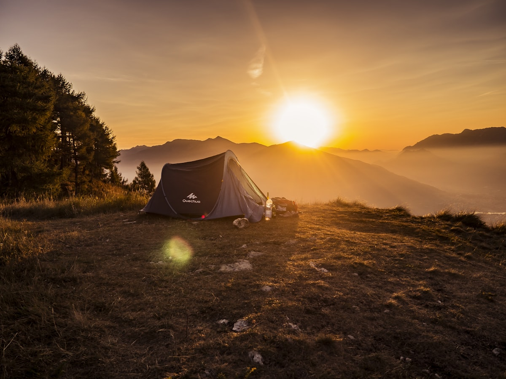
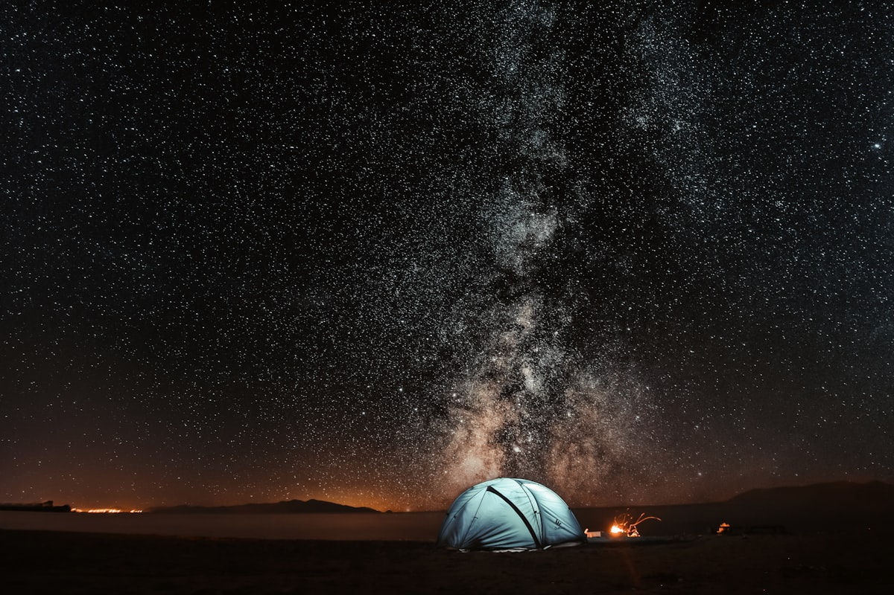

What Makes Yellapatty Unforgettable
From surreal cloud inversions to starlit cliff-edge bonfires, every step on the Yellapatty trail creates lasting wilderness memories.

The Legendary Sea of Clouds
Witness the awe-inspiring cloud inversion phenomenon where thick white cloud beds blanket the deep valley beneath your feet while mountain peaks pierce through like solitary islands.

Cliff-Edge Stargazing Camp
Camp at high-altitude ridge shelters perched over 2,000 meters above sea level. Enjoy crystal-clear pollution-free skies offering spectacular views of the Milky Way galaxy and distant valley lights.
Century-Old Tea Slopes
Hike winding pathways through undulating green carpets of tea, established during the British plantation era, breathing crisp cardamom and eucalyptus-infused mountain air.

Montane Shola Forest Trail
Enter mystical stunted shola rainforest pockets draped in thick moss, lichens, wild orchids, and mountain ferns that serve as vital water catchments for the Western Ghats.

Campfire, BBQ & Highland Tales
As mountain temperatures plummet after dusk, gather around a roaring wood campfire to share stories with fellow adventurers while savoring warm barbecued bites and home-cooked dinner.

Borderscape Panoramic Ridge
Walk the knife-edge geographical ridge separating God's Own Country and Tamil Nadu. Gaze down thousands of feet into the Bodinayakanur canyon and the expansive plains below.